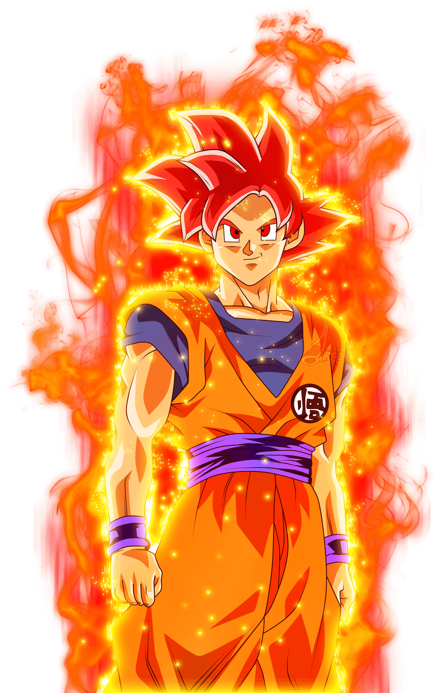
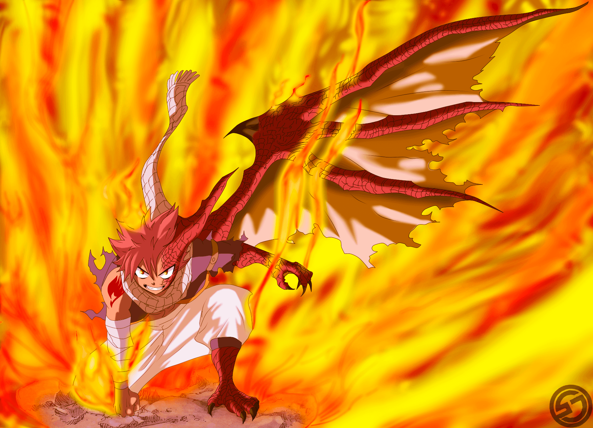
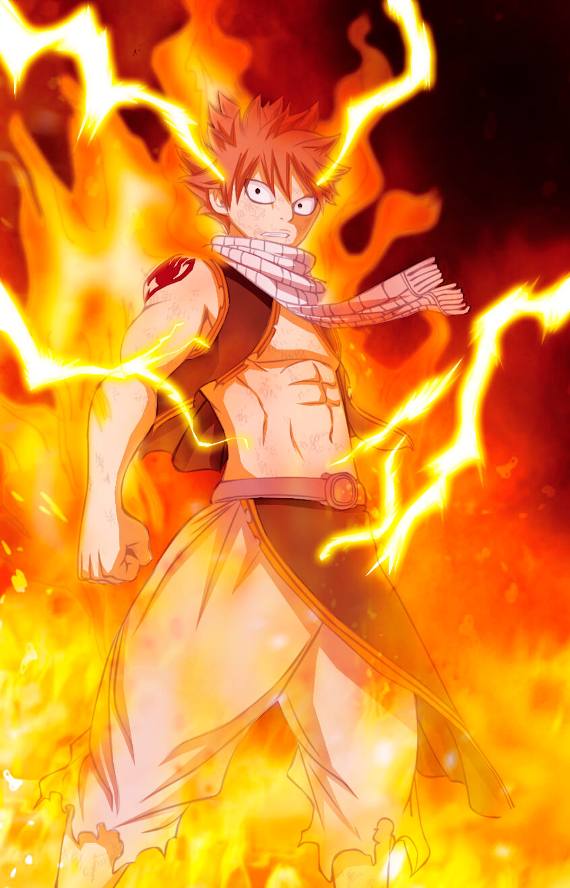

Modes
Modes which can be used in battle
Modes are power-ups which are used in battle. They help to give a boost to a player's skill damage, damage resistance and more. There are different modes with many different uses. There are more defensive modes and more attacking ones. Some modes can be bought while some others cannot. Multiple modes cannot be used simultaenously(i.e only one mode can be used at a time).
Ninja Modes
1st Gate Mode: Your opponent losses 1cp for every move he plays. Take a move you have already used before, excluding your KKG(you can either use it in the same turn you played this or save it for later). 3cp to activate. 13xp to buy.
2nd Gate Mode: You can copy three of your opponent's jutsus, one in each turn, but you cannot use it in that turn(modes and KKGs cannot be copied). Gain 1cp after copy. 3cp to activate. 16xp to buy.
3rd Gate Mode: You are allowed to nullify you opponent's previous jutsu but you lose 2hp & your opponent loses 1hp and 1cp in the process. This mode cannot be neglected. 4cp to activate. 15xp to buy.
Rage Mode: All damages you cause to your opponnet are increased by 1. 4cp to activate, 6cp if you want to increase the damage by 2(except weapons). 19xp to buy.

Sage Mode: Gain double of any cp you receive, take all your used jutsus back and the damages of those taken back are doubled, but you pay double the cp. 5cp to activate. 16xp to buy.

Sage Of Six Paths Mode: Gain 1cp in every turn, KKG related moves as well as time skills(except modes) do not affect you. All damage caused to opponent is increased by 1. Cannot be bought without sage mode. 5cp to activate, do not use cp if already in Sage mode. 19xp to buy.

Cursed Mode: Gain 3cp, each turn give damage to you and your opponent's life according to each players cp, damage cannot be more than 10. This continues until this mode is destroyed. 4cp to activate. 16xp to buy.
Yellow Flash Mode: All opponent's direct attacks delay a turn before they cam affect you. You can use 3cp to defend against the damage and another 3 to give the opponent that damage. Max damage that can be redirected is 7. Max negligible damage is 10. 5cp to activate. 25xp to buy.

3 Tomoe Sharingan Mode: You lose 1cp every of your turn end, every turn, opponent must tell user their next move they will use in their next turn in the form of the skill type(neg, time, atk, def. The skill name should not be said) and must use it accordingly in their next turn. Only works on one opponent. This mode ends when your cp reaches 5 & below. Beginner level needed, can only be used if you have Sharingan KKG. 4cp to activate. 20xp to buy.
Tenseigan: When your opponent uses a skill in their turn, you can decide to pay the cp for the move the opponent is about to use and seal it(does not work on KKGs). Sealed skills cannot be used until opponent's life reaches 7 and below. Beginner level needed. Can only be used if you have Byakugan KKG. 2cp to activate. 18xp to buy.
Lightining Chakra Mode: Gain 3cp, all skills that give 3 and above damage to you are reduced by one, all your attacks are increased by 1. Neglect skills used by opponent do not work on you. Gain 1cp every turn for every other mode in the field, this mode ends when your cp is 5 and below. 4cp to activate. 30xp to buy.
Saiyan Modes
Limit Breaker: Every turn, bring one used skill back. A skill can only be brought back once, KKGs cannot be brought back This mode ends when your cp reaches 3 and below. 3cp to activate. 20xp to buy.

Super Saiyan 1: Gain 3cp, copy a used move from your opponent's card and give it to you or a member of your team. All damage you take from attacking skills are reduced by 1. 4cp to activate. 18xp to buy

Super Saiyan 2: Every end turn, Remove 2hp from all players that have other modes or beasts in the battle. All damages done by your attacking skills is increased by 1. You lose 1cp every of your end turn. 2cp to activate, do not use cp if already in Super Saiyan 1 mode. Cannot be used without having Super Saiyan 1. 20xp to buy.

Super Saiyan 3: For all time skills, you get 2cp for each of them every of your turn. You lose 1cp every of your end turn when no time skills are active. End this mode when your cp reaches 3 or below. Expert Level Needed. 3cp to activate, do not use cp if already in Super Saiyan 2. Cannot be used without having Super Saiyan 2. 25xp to learn.
Super Saiyan 4: Any neglect skill used by your opponent is neglected(if it can be neglected) and gives you 2hp and 2cp. All your attacking skills damages are increased by 1. All damage you receive from attacking skills is reduced by 1. You lose 1cp every of your turn end. You can remove yourself from this mode only when you are about to end your turn(even if you play a skill in that turn). This mode automatically ends when your hp reaches 5 or below. Expert level needed. 6cp to activate, do not use cp if already in Super Saiyan 2 mode. Cannot be used without having Super Saiyan 2. 34xp to buy.

Super Saiyan 5: All your attacks are multiplied by 1.5. All damage you take from attacking skills is reduced by 1. You lose 1cp every turn. 5cp to activate, do not use cp if already in Super Saiyan 4 mode, cannot be used without having Super Saiyan 4 mode. 30xp to buy.

Super Saiyan God(Super Saiyan Red): All opponent's attacks are divided by 2 while in this mode. Lose 1cp every turn. This mode automatically ends when you have no cp left. Expert level needed. 4cp to activate. Cannot be bought without having SS1 & SS2. 50xp to buy.

Super Saiyan Blue(Super Saiyan God Super Saiyan): All your attacks damage are increased by 2(except weapoons). All damage you receive from attacking skills are divided by 1.5. You lose 1cp every turn. This mode automatically ends when your cp reaches 5 or below. Expert Level needed. 5cp to activate. Cannot be bought without having SS1, SS2 & SSG. 60xp to buy.
Legendary Super Saiyan 1: You gain 4cp. All damage you take from skills that use cp is reduced by 2, all your attacks are increased by 1. This mode automatically ends when your life is 5 or below. 5cp to activate. It is only given by chanc
Legendary Super Saiyan 2: You gain 5cp. All damage you take from skills that use cp is reduced by 2, all your attacks are increased by 2(except weapons). Lose 1cp every of your end turn. This mode automatically ends when your life is below 5. Beginner level needed. 4cp to activate, do not use cp if already in LSS1. 55xp to buy.
Dragon Force: All your attack skills damage is increased by 2(except weapons). 4cp to activate. 19xp to buy.
Wizard Modes

Dragonification: A user has a dragon seed which turns him/her into an actual dragon. Users attacks are added by 2(except weapons).

Enchantment: Hellblaze Mode: While in this mode, your opponents cannot regenerate. You conjure demonic black flames which increase your battle damage by 1. Your opponent loses 1hp in their end turn while this mode is active, users killed by this effect cannot be revived by any means. This mode ends when user's cp is below 7. 4cp to activate. 25xp to buy.
Full Dragon Force: This is the ultimate dragon slayer state that can be attained. In this mode, one has dragon-like scaly skin. All battle damages are reduced by 2. All attacks are increased by 1. 4cp to activate. 28xp to buy.
Assault Mode: Wizards in this mode access the power of the Demon King's top successor. Attacks are buffed by 3(except weapons), opponents attacking moves which use cp are reduced by 2. While in this mode you lose 1cp and 1hp every end turn. This mode ends when either users cp or hp is 5 or below. 5cp to activate. 48xp to buy.

Lightining Fire Mode: While in this mode, you are allowed to play 2 moves in a turn twice, all attacks which use cp are increased by 1. 4cp to activate. 30xp to buy.
Dragon King Mode: This is a unique ability possessed by a wizard. The potency of this skill increases the damage of the user by 1. Opponent loses 1hp every end turn of theirs and prevents neglect spells from affecting the user. 3cp to activate. 25xp to buy.